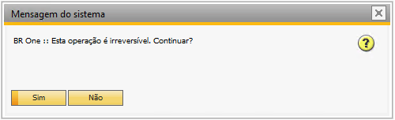

Configuração de depósitos para referência
A tela Configuração de depósitos para referência é utilizada para configuração de parametrizações com “De-Para” entre os depósitos das multi-filiais.
Portanto, ela está disponível apenas para bases multi-filiais.
Para acessar a tela é necessário ir no menu:
Administração > Definição > Estoque > Configuração de depósitos para referência.

Caso a base não seja multi-filial, e o usuário tente abrir a tela de “Configuração de depósitos para referência”, a seguinte mensagem de erro será exibida:

BR One :: Tela disponível apenas para bases de multi-filiais.
Na tela “Configuração de depósitos para referência” é feita a relação dos depósitos da “Filial De” com os depósitos da “Filial Para” escolhidos pelo usuário. O campo “Filial De” listará todas as filiais ativas existentes.

O campo “Filial Para” listará todas as filiais ativas existentes, exceto a filial atribuída no campo “Filial De”.

As colunas “Cód. dep. filial referência” e “Nome dep. filial referência” exibirão o código e o nome dos depósitos relacionados à Filial De. Na coluna “Cód. dep. Filial” escolhida deverá ser selecionado qual depósito da “Filial Para” escolhida se relaciona ao depósito da “Filial De”.

Após o preenchimento de todos os campos do “Cód. dep. Filial escolhida”, o usuário deverá pressionar o botão “Atualizar”.

Caso o usuário deixe o campo “Cód. dep. Filial escolhida” vazio em alguma das linhas, será exibido a seguinte mensagem:

BR One :: Campo “Cód. dep. Filial escolhida” é de preenchimento obrigatório, linha X.
Na coluna “*Cód. dep. filial referência”*, caso o depósito seja de envio direto deverá ser relacionado com um depósito da “Filial Para” escolhida que também seja um depósito de envio direto.

Caso o usuário relacione um depósito de expedição direta com um depósito que não seja de expedição direta, a seguinte mensagem de erro será exibida:

BR One :: Campo “Cód. dep. filial escolhida” deve ser um depósito de expedição direta, linha X.
Na coluna “Cód. dep. filial referência”, caso o depósito seja de terceiros deverá ser relacionado com um depósito da “Filial Para” escolhida que também seja um depósito de terceiros.

Caso o usuário relacione um depósito de terceiros com um depósito que não seja de terceiros, a seguinte mensagem de erro será exibida:
BR One :: Campo “Cód. dep. filial escolhida” deve ser um depósito de terceiros, linha X.
Para remover um registro, basta clicar com o botão direito sobre o registro que deseja remover e clicar em “Remover”.

Quando o usuário clicar em Remover, a seguinte mensagem será exibida:
BrOne :: Esta operação é irreversível. Continuar?
Ao clicar “Sim”, o registro é removido, ao clicar “Não”, o processo é cancelado.
Caso o usuário tente remover uma configuração inexistente, a seguinte mensagem será exibida:
BR One :: A filial selecionada não possui configuração.
Com todas as parametrizações feitas, será possível dentro das telas “Roteiro” e “Ordem de Produção” alterar os depósitos automaticamente.
Para isso, deverá ser selecionado a filial desejada no cabeçalho, assim os depósitos do documento serão filtrados por essa filial.
Ao abrir o documento, o campo filial será carregado com as filiais ativas que o usuário possui acesso.


Com os depósitos do documento preenchidos, se o usuário alterar a filial do cabeçalho para uma filial que possui parâmetros de depósitos configurados com a filial do documento, a seguinte mensagem será exibida:

BR One :: Os depósitos serão atualizados. Deseja continuar?
Ao clicar em “Sim”, os depósitos serão atualizados conforme os parâmetros configurados, ao clicar em “Não”, o processo será cancelado.
Caso o usuário altere a filial do documento para uma filial que não possui parâmetro de depósitos configurados, a seguinte mensagem será exibida:

BR One :: Não existe configuração de depósitos da filial X para a filial Y. Os valores de depósitos da tela serão apagados. Deseja continuar?
Ao clicar em “Sim”, os depósitos da tela serão apagados para o usuário configurá-los novamente, caso o usuário clique em “Não”, a filial do documento não será alterada.
Na tela de Ordem de Produção, caso o Status do documento seja diferente de “Planejada”, a filial do documento estará bloqueada e não poderá ser alterada.

Na tela “Roteiro” e “Ordem de Produção”, ao ser adicionado um item ou componente com depósito padrão que não pertence a filial do cabeçalho será verificado se existe parâmetros de depósitos configurados, se existir é preenchido com o valor configurado, se não o campo ficará vazio para preenchimento do usuário.
No processo de beneficiamento de compra, ao fazer a transferência de estoque dos componentes do depósito padrão para o depósito de terceiro do parceiro de negócio será verificado se existe parâmetros de depósitos configurados para o depósito padrão do item e depósito padrão do parceiro com a filial selecionada na ordem de produção.
Caso exista uma configuração cadastrada, o depósito de origem e destino da transferência de estoque é alterado.
Na tela “Devolução de mercadorias”, caso não haja parâmetros de depósitos configurados do depósito padrão do item para a filial da ordem de produção, o seguinte erro será mostrado:

BR One :: O depósito padrão do item X não possui configuração De/Para com a filial Y.
Na tela Devolução de mercadorias, caso não houver parâmetros de depósitos configurados do depósito padrão do parceiro de negócios para a filial da ordem de produção, o seguinte erro será mostrado:

BR One :: O depósito padrão do parceiro de negócio X não possui configuração De/Para com a filial Y.